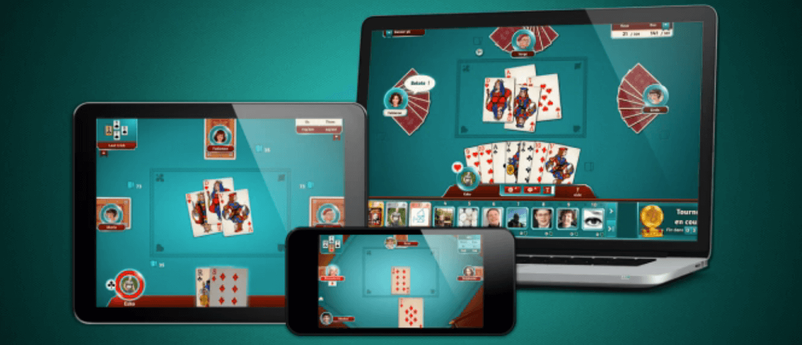

BELOTE
#UX Design
User Experience Design for the classic french card game on a digital multiplatform game (Facebook, Web, native mobile) made at Game Duell GmbH
The Target
Gameduell.com has a solid and profitable platform of diverse web games with a stable userbase and good knowledge of marketing practices. In 2012 after the social games boom they decided to port most of their popular games to social networks like Facebook. They also strategically planned how to develop several clients of the same game in different platforms.
The Scope
I took over two games: A facebook shooter called Bubble Speed, with daily rankings and a userbase of 150k daily users. My duties were designing, leading the production and testing features that could improve engage and retention metrics. I also was in charge of the port of Belote / Coinche digital card games to ios. From the initial business requirements We broke down the roadmap features and I was in charge of designing the UI, map controls, adapt the experience to the handset and tablet devices.
The Engine
We used the ios native technology to implemente this client application. Swift wasn't released yet, so the implementation was made in Objective C#

The Challenge
Designing a layout for tablet, then mobile phone. Setting up all the game and UI elements. Designing features that could be functional cross platform.
The Process
After the required pen and paper blueprints. I used mainly Balsamiq to produce interactive mockups in pdf so we could test them internally and validate some user flows. Once the wireframes were ready to go, a team of artists started with ilustrations of characters, UI elements, cards, marketing materials etc... It took about 5 to 6 months to get an mvp that could be deployed live. Animations and quality details were fundamental to stand out in the app store.
Validation
After the mvp and with the grow of tablet and smartphone users we could see a raise of converted users from other platforms and also an incremental number of new users every month.
Learnings
I learnt about project kick off, backlog set up, Jira and Confluence documentations, producing interactive mock ups back in the days in Balsamiq. I explored a lot about layouts for mobile devices, cross platform applications with user accounts, UI/UX for mobile and also I developed great skills playing Belote and Coinche!